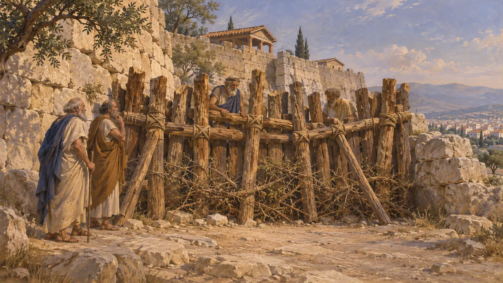
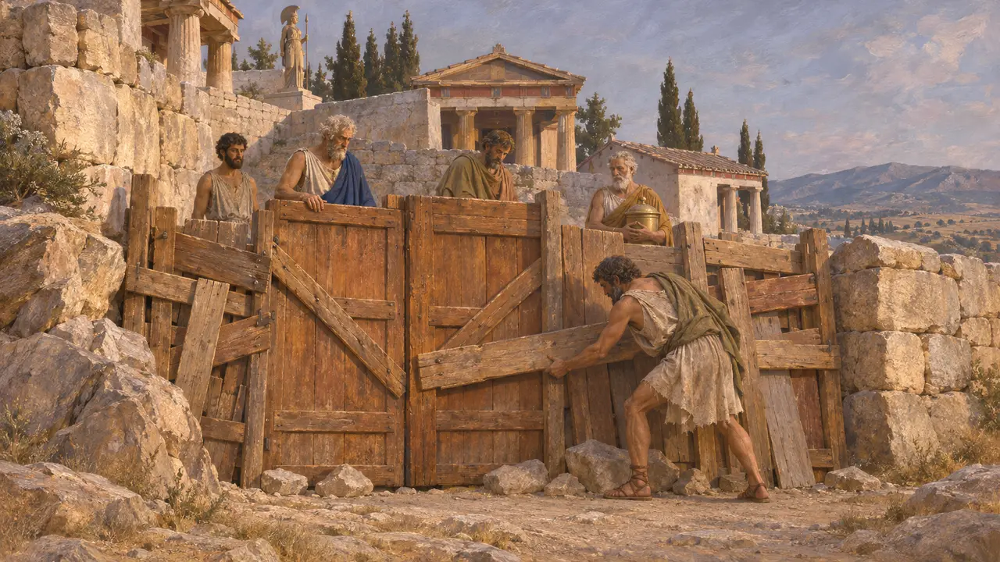
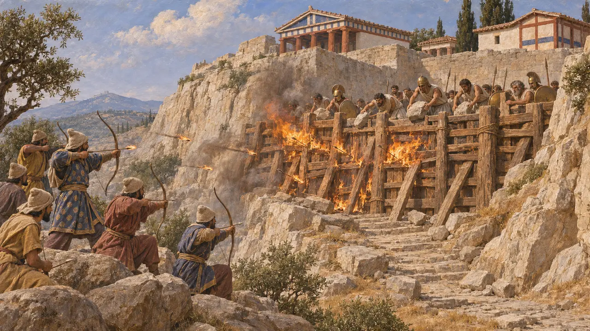
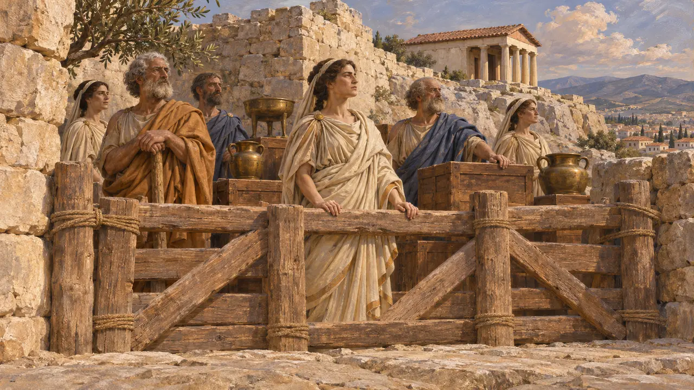
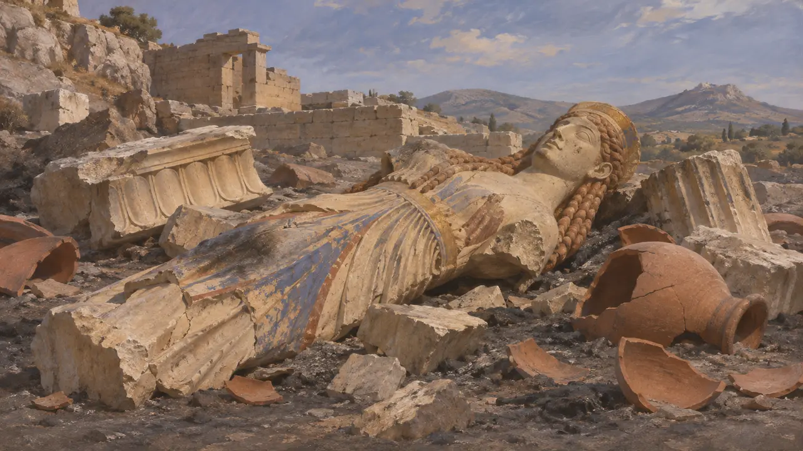

حصار چوبی
حصار چوبی در ورودی آکروپولیس آتن، 480 پ.م.
هنگامی که سپاه خشایارشا در سال 480 پ.م. به آتن رسید، بیشتر آتنیان به سالامیس، اگینا و ترویزن رفته بودند. اندک کسانی که ماندند، برخی از آن رو که تهیدستتر از آن بودند که بروند، راه بالا رفتن به آکروپولیس را با درها و الوارها بستند و باور داشتند که این همان دیوار چوبی پیشگویی است. هرودوت روایت میکند که پارسیان آن را با تیرهای آتشین سوزاندند و سپس ارگ را گرفتند و به آتش کشیدند.
در بازی: حصار چوبی در نقشهٔ یکی از مرحلهها بهعنوان بنایی تاریخی برپاست که بازیکن آن را نمیسازد. یادداشت بازی از روایت هرودوت دربارهٔ درها، الوارها و تیرهای آتشین پیروی میکند.

پیشگویی دیوار چوبین
روایت باستانیهرودوت میگوید که پیش از لشکرکشی، پوتیا در دلفی به آتنیان گفت که تنها دیواری چوبین از غارت در امان خواهد ماند. برخی از آتنیان سالخوردهتر پنداشتند که مقصود آکروپولیس است که به گفتهٔ او زمانی با پرچینی از خار محصور بوده است. تمیستوکلس استدلال کرد که مقصود ناوگان است، و آتنیان بر آن شدند که با کشتیهایشان به رویارویی مهاجم بروند.
Herodotus 7.140-144

آنان که ماندند
روایت باستانیبه گفتهٔ هرودوت، پارسیان شهر را خالی یافتند جز چند تن در پرستشگاه: خزانهداران معبد و چند مرد تنگدست. اینان آکروپولیس را با درها و تختهها حصار کشیده بودند، هم از آن رو که توان رفتن به سالامیس نداشتند و هم از آن رو که میپنداشتند معنای راستین پیشگویی را دریافتهاند. هرودوت گشودن شهر را در دوران آرخونی کالیادس میداند.
Herodotus 8.51

تیرهای آتشین و سقوط ارگ
روایت باستانیهرودوت میگوید پارسیان تپهٔ آریوپاگوس را در روبهروی آن گرفتند و تیرهایی پیچیده در کنف سوزان به سوی حصار انداختند تا آتش گرفت. مدافعان باز هم ایستادگی کردند، سنگ بر سر مهاجمان غلتاندند و شرایطی را که از راه پیسیستراتیان تبعیدی پیشنهاد شده بود نپذیرفتند. سرانجام شماری از پارسیان از دیوارهٔ پرشیب و بینگهبانی نزدیک زیارتگاه آگلائوروس بالا رفتند، مدافعان را کشتند و پرستشگاه را غارت کردند و به آتش کشیدند.
Herodotus 8.52-53

فرمان تروزن
مورد مناقشهسنگنبشتهای که در تروزن یافت شد و در سال 1960 منتشر گردید، خود را فرمان تمیستوکلس برای تخلیهٔ آتن معرفی میکند. در آن آمده است که خزانهداران و کاهنهها باید برای پاسداری از دارایی خدایان بر آکروپولیس بمانند. این سنگ در آغاز سدهٔ سوم، مدتها پس از 480 پ.م.، تراشیده شده و زمانبندی تخلیه در آن با گفتهٔ هرودوت سازگار نیست. تاریخنگاران هنوز بر سر این بحث میکنند که آیا این سنگ فرمانی راستین را نگه داشته یا بازسازیای از روزگاری پسین است.
M. H. Jameson, Hesperia 29, 1960; R. Meiggs and D. Lewis, Greek Historical Inscriptions, 1969

بقایای سوخته
در اسناداز حصار چوبی چیزی برجا نمانده است. کاوشهای دههٔ 1880 در آکروپولیس لایههای ژرفی از پیکرههای سوخته و شکسته، سفال و سنگهای ساختمانی را آشکار کرد. این لایهها را بهطور سنتی به غارت پارسیان و پاکسازی بعدی محوطه نسبت میدهند، هرچند باستانشناسان در اینباره بحث دارند که چه اندازه از این انباشتهها به سال 480 پ.م. بازمیگردد. تندیسهای آسیبدیدهٔ این لایهها اکنون در موزهٔ آکروپولیس به نمایش درآمدهاند.
J. Hurwit, The Athenian Acropolis, 1999
منابع
- Herodotus 8.51-53
- Herodotus 7.140-144
- M. H. Jameson, A Decree of Themistokles from Troizen, Hesperia 29, 1960
- R. Meiggs and D. Lewis, A Selection of Greek Historical Inscriptions to the End of the Fifth Century BC, 1969
- J. Hurwit, The Athenian Acropolis, 1999
- P. Green, The Greco-Persian Wars, 1996